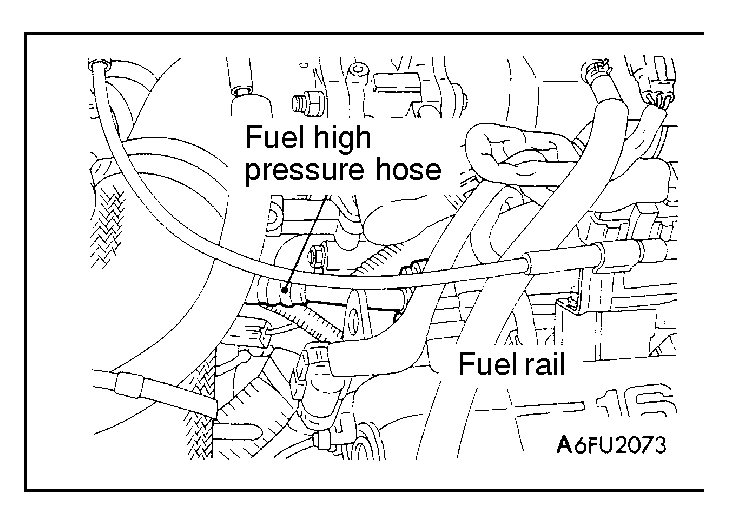
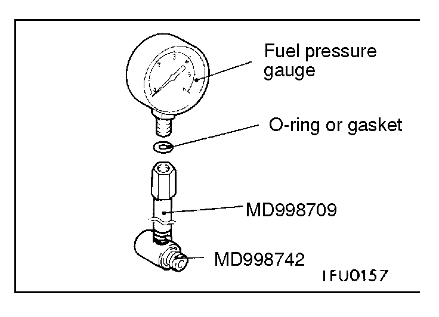
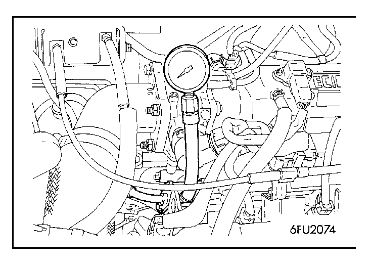
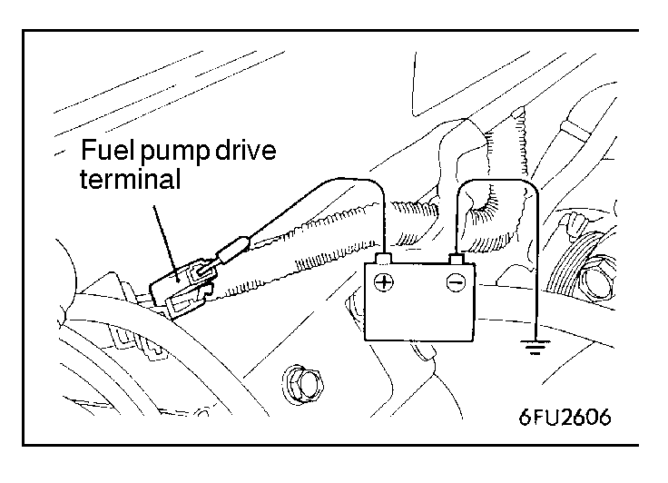
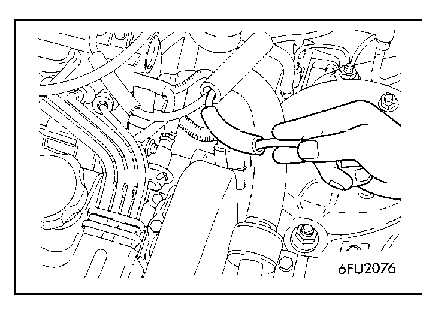

![[Previous]](https://mitsubishitechinfo.com/data/F24S/BUTTONS/fprevg.png)
![[Next]](https://mitsubishitechinfo.com/data/F24S/BUTTONS/fnextg.png)
    
FUEL PRESSURE TEST
1.Release residual pressure from the fuel line.
(Refer to  .)
.)
2.Disconnect the high-pressure fuel hose at the fuel rail side.
Caution
Cover the hose with a shop towel not to let pressurized fuel gush out.
3.Remove the union joint and bolt from the special tool (adapter hose MD998709) and instead attach the special tool (hose adapter MD998742) to the adapter hose.
4.Install a fuel pressure gauge on the adapter hose that was set up in step 3.
Use a suitable O-ring or gasket between the fuel pressure gauge and the special tool so as to seal in order to prevent fuel leakage at this time.
5.Install the special tool, which was assembled in steps 3 and 4 between the fuel rail and the high pressure hose.
6.Connect the fuel pump drive terminal to the battery (+) terminal using a jumper wire to drive the fuel pump. Check the fuel pressure gauge and special tool connections for leaks.
7.Disconnect the jumper wire from the fuel pump drive terminal to stop the fuel pump.
8.Start the engine and run at idle.

9.Measure fuel pressure while the engine is running at idle.
Standard value:
Approx. 230 kPa (33 psi) at curb idle
<2.0L Engine (Turbo)>
Approx. 270 kPa (38 psi) at curb idle <2.4L Engine>
10.Disconnect and plug the vacuum hose from the fuel pressure regulator and measure fuel pressure with the hose end closed by a finger.
Standard value:
289 - 309 kPa (42 - 45 psi) at curb idle
<2.0L Engine (Turbo)>
330- 350 kPa (47 - 50 psi) at curb idle <2.4L Engine>
11.Check to see that fuel pressure at idle does not drop even after the engine has been raced several times.
12.Racing the engine repeatedly, hold the fuel return hose lightly with fingers to feel that fuel pressure is present in the return hose.
NOTE
If the fuel flow rate is low, there will be no fuel pressure in the return hose.
| 13.If any of fuel pressure measured in steps 9 to 12 is out of specification, troubleshoot and repair according to the table below. | |||||||||||||||||||||||||||||||||||||||||||||||||||||||||||||||||||||||||||||||

|
|||||||||||||||||||||||||||||||||||||||||||||||||||||||||||||||||||||||||||||||
| Symptom | Probable cause | Remedy | |||||||||||||||||||||||||||||||||||||||||||||||||||||||||||||||||||||||||||||
| •Fuel pressure too low •Fuel pressure drops after racing •No fuel pressure in fuel return hose |
Clogged fuel filter | Replace fuel filter | |||||||||||||||||||||||||||||||||||||||||||||||||||||||||||||||||||||||||||||
| Fuel leaking to return side due to poor fuel regulator valve seating or settled spring |
Replace fuel pressure regulator | ||||||||||||||||||||||||||||||||||||||||||||||||||||||||||||||||||||||||||||||
| Low fuel pump delivery pressure | Replace fuel pump | ||||||||||||||||||||||||||||||||||||||||||||||||||||||||||||||||||||||||||||||
| Fuel pressure too high | Binding valve in fuel pressure regu- lator |
Replace fuel pressure regulator | |||||||||||||||||||||||||||||||||||||||||||||||||||||||||||||||||||||||||||||
| Clogged fuel return hose or pipe | Clean or replace hose or pipe | ||||||||||||||||||||||||||||||||||||||||||||||||||||||||||||||||||||||||||||||
| Same fuel pressure when vacuum hose is connected and when dis- connected |
Damaged vacuum hose or clogged nipple |
Replace vacuum hose or clean nip- ple |
|||||||||||||||||||||||||||||||||||||||||||||||||||||||||||||||||||||||||||||
| Malfunction of the fuel pressure control system |
Checking the fuel pressure control system |
||||||||||||||||||||||||||||||||||||||||||||||||||||||||||||||||||||||||||||||
| 14.Stop the engine and observe fuel pressure gauge reading. Normal if the reading does not drop within 2 minutes. If it does, observe the rate of drop and troubleshoot and repair according to the table below. |
|||||||||||||||||||||||||||||||||||||||||||||||||||||||||||||||||||||||||||||||
| Symptom | Probable cause | Remedy | |||||||||||||||||||||||||||||||||||||||||||||||||||||||||||||||||||||||||||||
| Fuel pressure drops gradually after engine is stopped |
Leaky injector | Replace injector | |||||||||||||||||||||||||||||||||||||||||||||||||||||||||||||||||||||||||||||
| Leaky fuel regulator valve seat | Replace fuel pressure regulator | ||||||||||||||||||||||||||||||||||||||||||||||||||||||||||||||||||||||||||||||
| Fuel pressure drops sharply im- mediately after engine is stopped |
Check valve in fuel pump is held open |
Replace fuel pump | |||||||||||||||||||||||||||||||||||||||||||||||||||||||||||||||||||||||||||||
| 15.Release residual pressure from the fuel pipe line. (Refer to 16.Remove the fuel pressure gauge and special tool from the fuel rail. Caution Cover the hose connection with a shop towel to prevent splash of fuel that could be caused by some residual pressure in the fuel pipe line. 17.Replace the O-ring at the end of the fuel high pressure hose with a new one. 18.Fit the fuel high pressure hose into the fuel rail and tighten the bolts to specified torque. Tightening torque: 5 Nm (3.6 ft.lbs.) 19.Check for fuel leaks. (1)Apply the battery positive voltage to the fuel pump drive terminal to drive the fuel pump. (2)Check the fuel line for leaks, repair as needed. |
|||||||||||||||||||||||||||||||||||||||||||||||||||||||||||||||||||||||||||||||